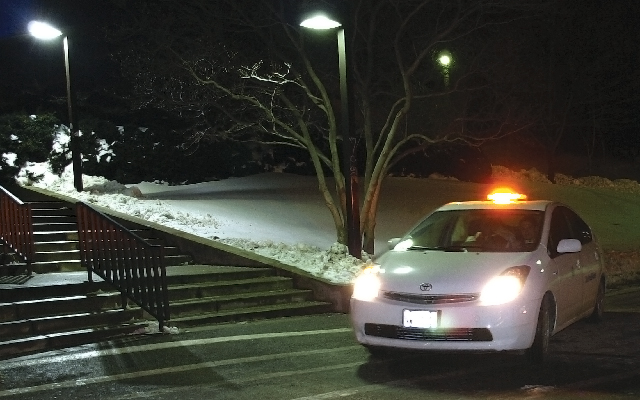

This project attempted to predict the wait time for a SafeRide on a particular night at a particular time. SafeRide is free car service on Northwestern’s campus that runs from 7:00pm to 3:00am seven days a week. SafeRide protects the health and safety of the Northwestern community by providing a safe and reliable travel option both on campus and throughout the local Evanston area. Unfortunately, students must often wait an hour or more before they can get a ride. Long wait times means students cannot rely on SafeRide to quickly escape uncomfortable or unsafe situations. Many times, this deters students from using the service at all. The long wait times often arise due to many students calling at the same time. If students calls were distributed more evenly throughout the night, or if SafeRide had more drivers during their busiest hours, the service would be much more effective. By predicting SafeRide wait times throughout the night and finding out what times are less busy, we hope to provide an accurate way to find out when the quietest times for a SafeRide are. Knowing when SafeRide will be less busy could also help the SafeRide board decide how many drivers to have on call each night.
We also looked at which features tend to affect wait times the most and how. The SafeRide executive board could use this information as a tool to decide how many drivers to have on call each night. For example, it is not immediately obvious how bad weather affects SafeRide wait times. It could keep students from going out at all and thus decrease the wait times throughout the night, or it could increase the wait times if students still go out but are more reliant on SafeRides to avoid walking in bad weather. By analyzing these factors, we can develop a set of preferences for the student body that the SafeRide executive board could use to understand when saferide will be busiest.